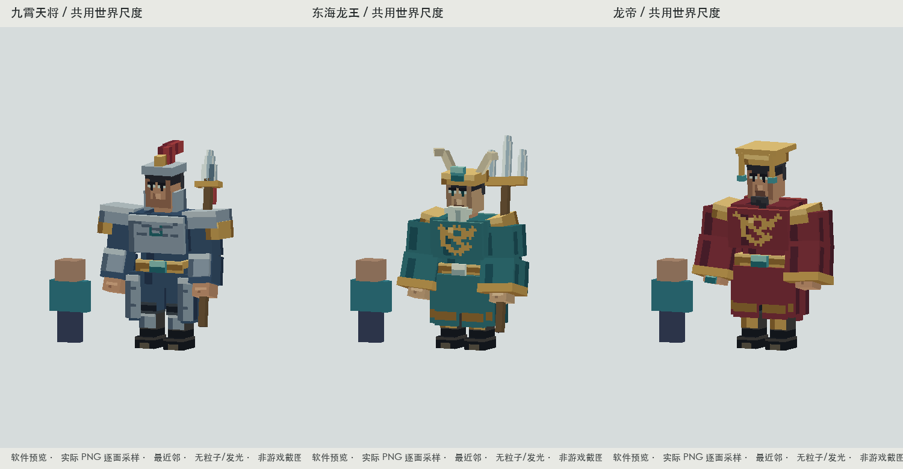
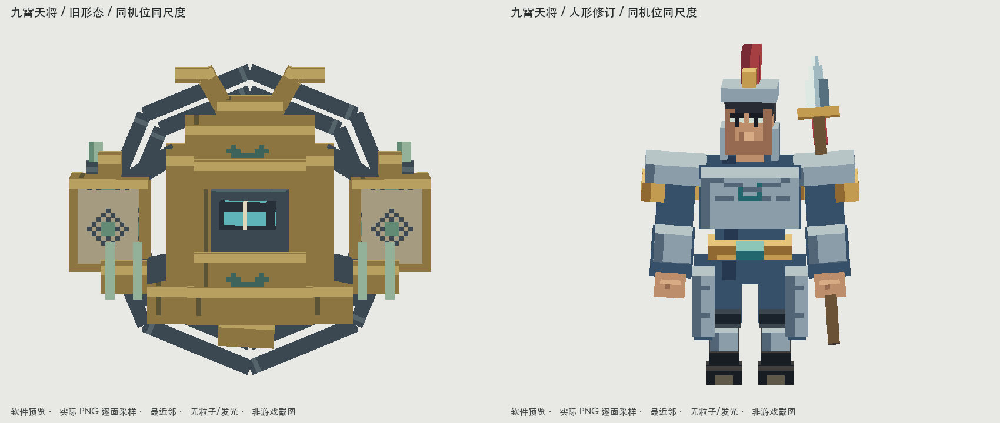
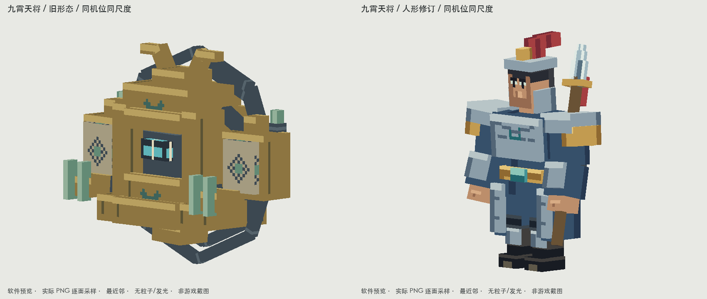
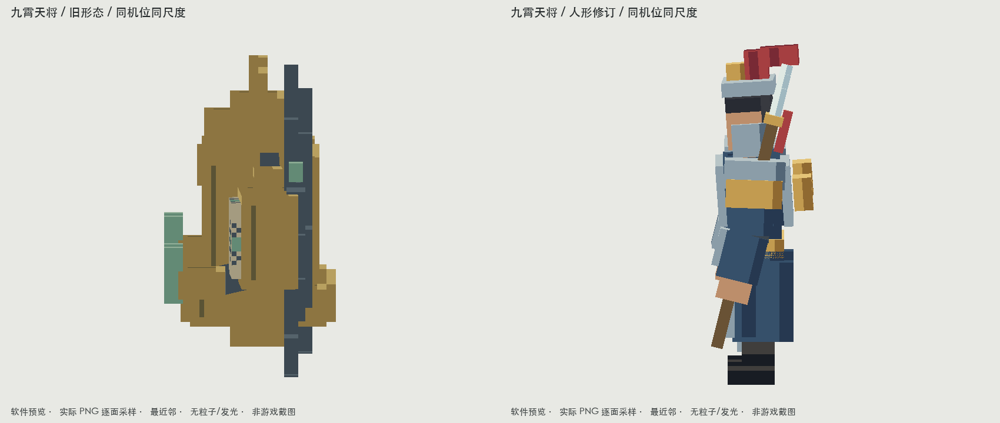
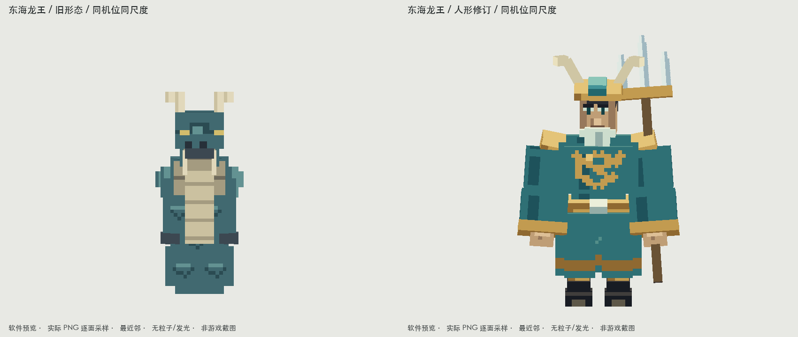
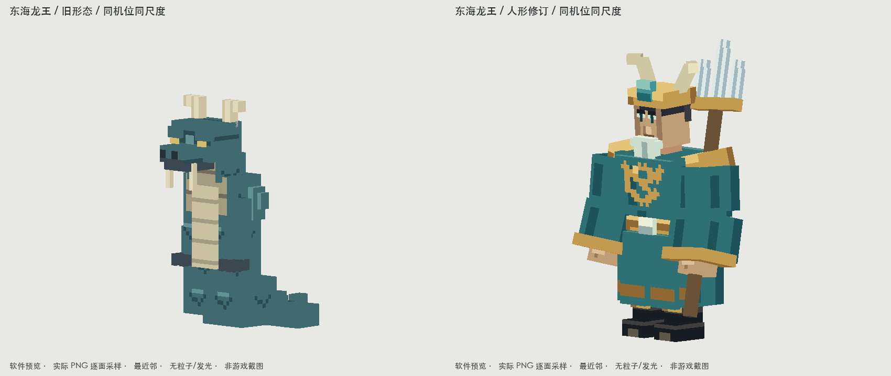
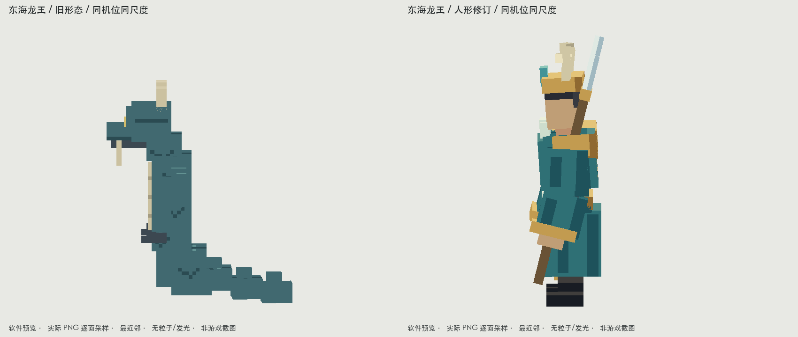

九霄天将 / 东海龙王 / 龙帝 · 人形Boss V10
2026-10-12用户明确要求这三只采用人形。与已认可八只非人形Boss分开处理；注册ID、身份、掉落、核心技能不更换。原色、基础光照、游戏截图分别标注。
天将 · 龙王 · 龙帝 · 离线验证 · 原生验证 · 改动与验证边界

与真正查看过的样本对照
样本用于人形可读性，未作为模型或皮肤底稿。作者画面与我们的普通日光实机图均保留；室内画面、太阳方向和截图机位不完全一致，不能宣称逐像素公平评比。原色图单独检验PNG。
实际返工记录
| 观察到的差距 | 改动 | 证据 |
|---|
| 第一轮眼形过大，甲面仍像空白盒子 | 收紧眼白/眉眼，连续胸甲带和布袍身份纹；保留干净大面 | 面部/躯干近景、灰度、实机正面 |
| 抬手前后方向错误，长兵器出击时刃朝向不清 | 纠正肩肘旋转、兵器协同；视觉峰值位于原6 tick动作中段 | 完整attack/cast回放 |
| 第三轮实机胸腰露天空；短攻击被2 tick过渡吞掉 | 加厚已有腰段形成连续衣体；仅三Boss的挥击/受击/死亡过渡为0 | 最终原生正侧面、观察真实出击峰值后截帧 |
| 脚部与甲袍抢主次、背雷纹位置偏低 | 脚保持7.5×4×10单位；肩胸主导体量，雷纹上移至上躯后方 | 玩家比例/侧面/黑剪影 |
我的判断：本版保留样本的人物识别与克制像素语言，额外提供Boss体量、厚甲/袍摆层次、肘膝动作和明确的进攻方向。不能用这一点宣称整体审美客观胜过原作者。自然寻路、联机和服务器施法同步仍待验，未用摆拍替代。
九霄天将 dynasty:nine_heaven_general

同机位、同尺度、相同基础光照；软件逐面PNG预览。
同机位、同尺度、相同基础光照；软件逐面PNG预览。
同机位、同尺度、相同基础光照；软件逐面PNG预览。原始PNG / 4倍最近邻 / UV方向
六段完整资源动作与阶段表
idle
walk
attack
cast
hurt
death
cast为完整资源回放；现有生产控制器没有服务器施法状态绑定。标准近战使用真实swing；画面“contact”表示视觉出击峰值，不等于伤害判定已验收。
普通原生Forge光照 / 玩家视高1.62m
可编辑bbmodel（含贴图、全部动作）
东海龙王 dynasty:dragon_king

同机位、同尺度、相同基础光照；软件逐面PNG预览。
同机位、同尺度、相同基础光照；软件逐面PNG预览。
同机位、同尺度、相同基础光照；软件逐面PNG预览。原始PNG / 4倍最近邻 / UV方向
texturetexture-4xuv-overlay-4xuv-direction 六段完整资源动作与阶段表
idle
walk
attack
cast
hurt
death
cast为完整资源回放；现有生产控制器没有服务器施法状态绑定。标准近战使用真实swing；画面“contact”表示视觉出击峰值，不等于伤害判定已验收。
普通原生Forge光照 / 玩家视高1.62m
可编辑bbmodel（含贴图、全部动作）
龙帝 dynasty:dragon_emperor
同机位、同尺度、相同基础光照；软件逐面PNG预览。同机位、同尺度、相同基础光照；软件逐面PNG预览。同机位、同尺度、相同基础光照；软件逐面PNG预览。front-unlit · 软件预览45-lit · 软件预览side-lit · 软件预览back-lit · 软件预览gray-model · 软件预览silhouette · 软件预览gray · 软件预览dim · 软件预览scene · 软件预览close-face · 软件预览close-torso · 软件预览close-hand · 软件预览 原始PNG / 4倍最近邻 / UV方向
texturetexture-4xuv-overlay-4xuv-direction 六段完整资源动作与阶段表
idle
walk
attack
cast
hurt
death
cast为完整资源回放；现有生产控制器没有服务器施法状态绑定。标准近战使用真实swing；画面“contact”表示视觉出击峰值，不等于伤害判定已验收。
普通原生Forge光照 / 玩家视高1.62m
可编辑bbmodel（含贴图、全部动作）